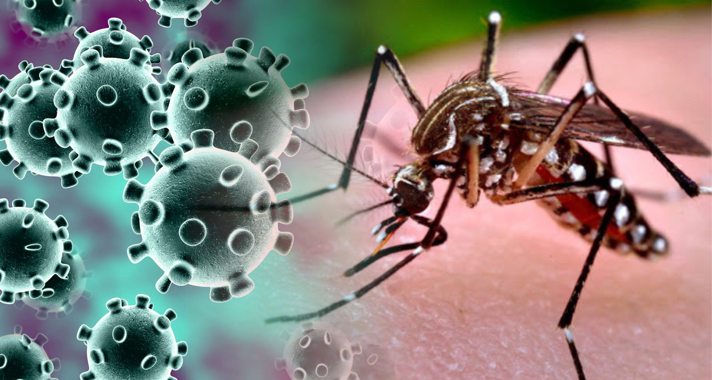

El dengue es una enfermedad viral transmitida por mosquitos, principalmente por el Aedes aegypti, una especie que se caracteriza por sus hábitos diurnos y su preferencia por zonas urbanas y periurbanas. Este virus pertenece a la familia Flaviviridae y al género Flavivirus, y tiene cuatro serotipos distintos: DEN-1, DEN-2, DEN-3 y DEN-4. Cada serotipo puede causar la enfermedad, y la infección con uno de ellos confiere inmunidad específica solo contra ese serotipo en particular.
La transmisión del dengue ocurre cuando un mosquito Aedes aegypti infectado pica a una persona, introduciendo el virus en su torrente sanguíneo. Es importante destacar que el mosquito debe haber adquirido el virus al picar a una persona ya infectada. Una vez infectado, el mosquito permanece portador del virus durante toda su vida. La transmisión no ocurre directamente de persona a persona, pero el entorno humano facilita la propagación del mosquito y, por ende, del virus.
El dengue es una enfermedad prevalente en regiones tropicales y subtropicales de todo el mundo, incluyendo América Latina, el sudeste asiático, el Pacífico occidental y partes de África. Los factores que contribuyen a la propagación del dengue incluyen el aumento de la urbanización, la falta de saneamiento adecuado y la acumulación de agua estancada, que sirve como criadero para los mosquitos Aedes.
Una característica notable del dengue es la recurrencia de la infección debido a la existencia de los cuatro serotipos del virus. Esto significa que una persona puede contraer el dengue hasta cuatro veces en su vida, cada vez con un serotipo diferente. La enfermedad es una preocupación significativa de salud pública debido a su potencial para causar grandes brotes epidémicos y su impacto en la morbilidad y mortalidad de las poblaciones afectadas.
Los esfuerzos para prevenir y controlar el dengue se centran en la reducción de la población de mosquitos mediante la eliminación de lugares de reproducción y la implementación de medidas de protección personal, como el uso de repelentes y mosquiteros. Además, la vigilancia epidemiológica y la educación comunitaria son componentes cruciales para reducir la incidencia de la enfermedad.